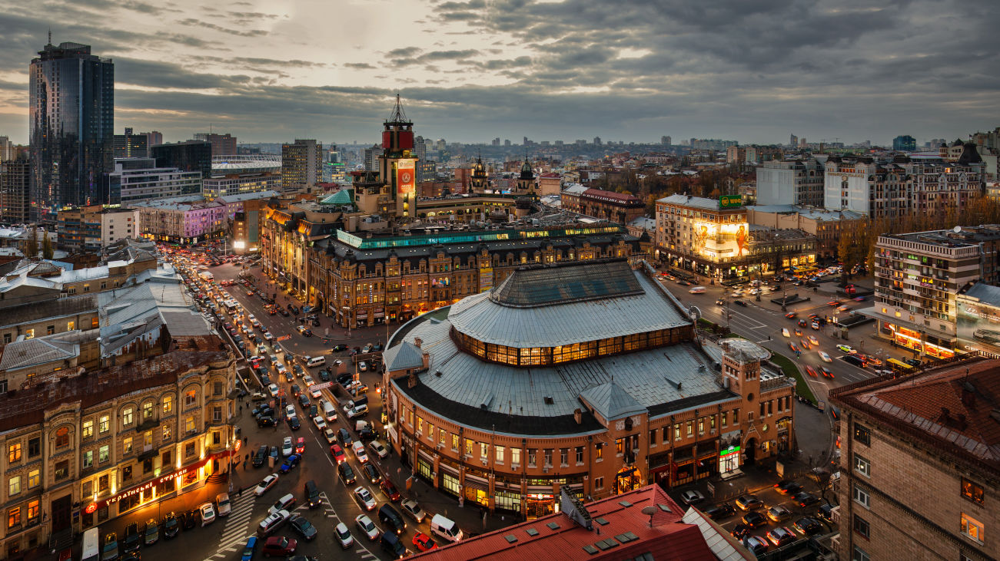

So let's go
Hi everyone! My name is Alex.
Important dates and event
| Date |
Event |
| 17.12.1987 |
The day of my birthday |
Place where I live
I live in Kyiv now. Kyiv is one of the most beautiful cities of the world that picturesquely spreads on the Dnipro river hills. Also Kyiv is the capital of Ukraine with population of about 3 million citizens. It is situated on the Dnipro River and boasts architectural monuments that are recognized world treasures. Kiev is the largest cultural, scientific and industrial center of Ukraine, the place of religious pilgrimage and a very attractive tourist destination. Its beautiful landscapes, parks and gardens charm and captivate.

Some interesting facts about Kiev and Ukraine
- The center of Europe is in Ukraine. The geographical center of Europe is in the western Ukraine in the small town of Rahov which is in a picturesque place among the Carpathians mountains.
- Khreshchatyk street – the shortest main street of the world! Do little more than 2800 steps to admire its beauty! In the context of architecture we can talk about gathering of different epochs! Among the rest of 2300 streets it is also the widest street of Kyiv which is named American long mile by locals.
- The third of the most visited Mcdonald’s is situated in Kiev, near the railway station. This restaurant is always included in the list of the world’s most popular Mcdonald’s. People made there 2 millions 283 thousand 399 orders last year.
- The subway station ‘Arsenalnaya’ in Kiev has the biggest depth all over the world. It’s depth lasts 105 meters. It was one of the first stations, which were built in 1960 next to the parlament building. Pursuant to some information, there are some secret refuges for the political top in the tunnels near the station ‘Arsenalnaya’. On the second place is the station ‘Park Pobedy’; it’s depth lasts 84 meters (now it’s depth is biggest in Russia).
- Scientists have found the most ancient map and settlement of the Homo Sapiens at the territory of modern Kiev. Wonderful finds were made in Mezhyrechje, Rivnenska oblast. They are about 14-15 years old. This map is beaten on the mammoth’s bones, and the material, which settlement is built of, is the same.
- You can see the famous shod flea in the Museum of Miniatures, Kiev. The work was made by a well-known Ukrainian craftsman of miniatures Nikolay Syadristy.
- The Ukrainian language took the second place in the world on melodic criteria after Italian. Also, it was ranked as the third most beautiful language in the world on the following criteria: phonetics, lexicon, phraseology and sentences structure after French and Persian languages at the linguistic contest which was held in Paris in 1934.
- 56 thousand hectares is an area of green space within the city (but some 50 years ago, Kiev was the greenest city in the world)
- Most of all words in the Ukrainian language starts with the letter «п». «О» is the most frequently used letter of the Ukrainian alphabet. The letters «ф» and «ґ» are least often used.
- The Ukrainian national anthem consists of only six lines — four in a verse and two in a chorus. The other verses of the anthem written by poet Pavel Chubinsky and composer Mikhail Verbitsky were not approved as considered politically incorrect. (“We’ll stand, brothers, in bloody battle, from the Syan to the Don” implies a claim to the territories of Russia and Poland).
- Ukraine is rich in manganese ore, 2.3 billion tons or about 11% of all deposits of the world. There is a lot of iron ore too — 7% of the world reserves.
- A plane with the largest freight-carrying capacity in the world – the An-225 “Mriya” was invented by Ukrainians, namely the Antonov Design Bureau. Originally, it was designed for spacecraft transportation. Now “Mriya” specializes in commercial freight.
- One of the world’s most famous Christmas songs is “Schedrik”, a folk song written by a Ukrainian composer Mykola Leontovych. The world knows it as “Carol of the Bells” or “Ring Christmas Bells”. Different versions of «Shchedryk» are gaining millions of views on Youtube.
- Ukrainian "Yuzhmash" (Dnepropetrovsk) produces the most environmentally friendly launch vehicles in the world. With the help of them commercial freights are sent in space within the international project "Sea Start".
- The official Guinness world record: Ukrainians recently made the world’s largest glass of champagne – 56.25 liters.
Well done!
You have finished reading my first page of the my website.
Click here to go to the next page.